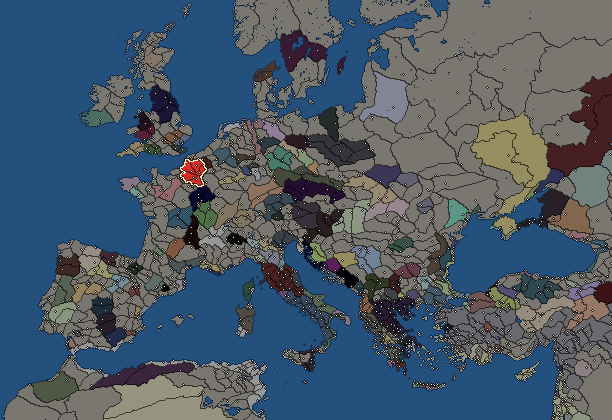
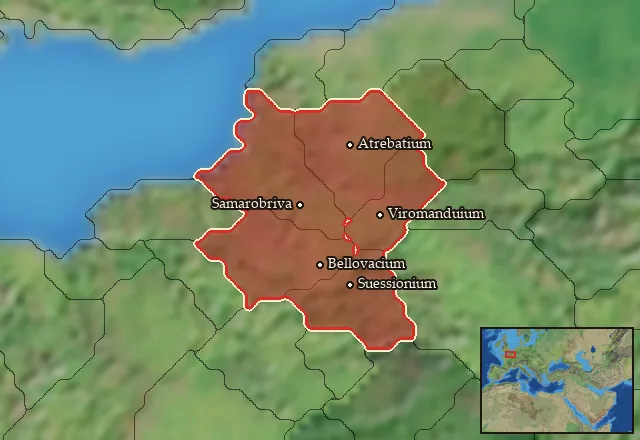

RTR: Imperium Surrectum
RTR: Imperium SurrectumBelgae


- difficulty Easy
- Gallic culture
- believes
 Celtic
Celtic - 5 settlements
- capital Viromanduium
- 10,300 manpower
- 4 characters
- 19 faction units
- 430 regional units
The campaign brief
"[...] the Belgae are the bravest, because they are furthest from the civilisation and refinement of our Province, and merchants least frequently resort to them, and import those things which tend to effeminate the mind." – Caesar, Bellum Gallicum, 1.1
Suavelos my friend! You are entering our new land, the land we have acquired by the grace of our swords and the flow of blood. Let me tell you about our epic journey! We began as a horde of warriors and brigands, gathered from various peoples on the other side of the Rhenos, travelling down the river Istros to the lands of the Greeks. On our way, we met all kinds of people, all kinds of rivals – all kinds of enemies. Our first fights were with other Celts who refused to let us pass, thinking that we would steal their herds and plunder their granaries. This forced us to avoid the Istros and reorient ourselves towards the Sava, coming across the Pannonian and Illyrian peoples who were already struggling to survive the confrontations with their own, local Celts. First, we fought them with great success, until we were defeated by Bathanattos’ new confederation of the Scordiscians, who wished to rule out the possibility of a rival faction establishing itself nearby.
After our defeat we went north and settled on the shores of Lake Pelsodis, to reconsider the situation. The movement of the Galatians initiated by Brennos was coming to an end. Many Celts were returning home, the luckiest ones with booty taken from the Greeks; others were settling in the surrounding area in the hope of founding new tribes. Obviously, our group was divided as to what to do next, with many wanting to stay in this territory near the lake. However, the region was too small to hold us all, so the decision was made to split our tribe. The first group took the name of Belgites and settled near the lake, the second group took the name of Belgians and followed the other Celts back to Gaul.
’Belgians’ is the nickname some of the other Celts gave us, a word used to describe madmen who loot, scream and destroy everything in their path. By moving, fighting and looting together, a certain unity began to form, and we have become accustomed to hearing the name and even enjoy it. The expedition to the South was only a half-failure for us, as even though we could not get our hands on the wealth of the Greeks, we now find ourselves as part of a united and powerful group.
While going up the Istros and before reaching the Rhine, we came across another group, the Suessiones. These were returning from an expedition in Thrace and going back home. They told us that they were originally a pagus of the Remians and that they now wanted to take power in their country. Reeking an opportunity, we concluded a deal and decided to join them in this endeavour. The Remians inhabited the Matrona and Axona valleys in northern Gaul. They had once been a very powerful people, dictating their will to almost all of Gaul, but this glory long lay in the past. Thus the Senones, who had once been subject to them, became a major power themselves and wrested supremacy from the Remians. And the Parisii, a people who recently arrived by migration, settled in their old territory and took control of the confluence between the Matrona and the Sequana. It was therefore no surprise that they were no match for our alliance. As soon as the first skirmishes began, they gave in to all the demands of the Suessiones! They gained control of another pagus, that of the Meldes, who became their clients, and were able to place many influential families in the senate of the Remians. As a way to thank us, the Suessiones offered us the lands that lie between the sea and the river Isara. However, these lands were within the sphere of influence of the Armoricans, and after we drove out its small number of weak and sorry inhabitants, the Armoricans formed a league at the head of a powerful army to try and repel us.
We faced them with the help of the Suessiones and Meldes, and during a bloody battle we were, of course, victorious. In commemoration of this great fight, we have built an imposing sanctuary where the carcasses of our adversaries are offered to celestial and subterranean divinities, together with their weapons. As you now understand, this land is new and has drunk the blood of the vanquished. Will you be able to defend it, or will you end up like its previous owners, crushed by a newcomer, your eyes and body exposed to the sky and the crows?
Starting settlements
Belgae begins with 5 settlements and 10,300 manpower.
| Settlement | Region | Size | Manpower | Already built | Settlement | Region | Size | Manpower | Already built |
|---|---|---|---|---|---|---|---|---|---|
| Viromanduium (capital) | Viromandua | large town | 2,900 | 11 buildings | Samarobriva | Ambiana | town | 1,900 | 6 buildings |
| Suessionium | Suessionia | town | 1,700 | 4 buildings | Bellovacium | Bellovacia | town | 2,000 | 4 buildings |
| Atrebatium | Atrebatia | town | 1,800 | 4 buildings |
What is already built in each settlement
Viromanduium, in Viromandua: Small Treasury, Governor's Villa, Wooden Palisade, Homeland, Cisterns (Sanitation), Region Information Scroll, Roads, Local Barter, Basic Armoury, Shrine, Contour Furrows (Crops)
Samarobriva, in Ambiana: Governor's House, Homeland, Region Information Scroll, Local Barter, Trade Port, Reedland Pasturing (Adaptive husbandry)
Suessionium, in Suessionia: Governor's House, Homeland, Region Information Scroll, Mast Pasturing (Adaptive husbandry)
Bellovacium, in Bellovacia: Governor's House, Homeland, Region Information Scroll, Hunting Grounds (Rural)
Atrebatium, in Atrebatia: Governor's House, Homeland, Region Information Scroll, Local Barter
Starting diplomacy
Allied with (1):  Cantiaci
Cantiaci
Trade agreements with (1):  Cantiaci
Cantiaci
At war with (1):  Aulerci
Aulerci
Like every faction, it is also at war with the  Free Peoples, who hold every settlement no faction does.
Free Peoples, who hold every settlement no faction does.
Homeland
Belgae's homeland is 5 regions. Only there can it install the Homeland government (more on homelands).

Ambiana · Atrebatia · Bellovacia · Suessionia · Viromandua
Starting characters
| Name | Role | Age | Name | Role | Age | Name | Role | Age | Name | Role | Age |
|---|---|---|---|---|---|---|---|---|---|---|---|
| Belgiorix | General | 50 | Belgios | General | 27 | Cativolcus | General | 16 | Commius | General | 41 |
Reforms
Open to every faction: Military innovations have arrived!, Second wave of military innovations have arrived!.
Units you can recruit
The same as in the main campaign.